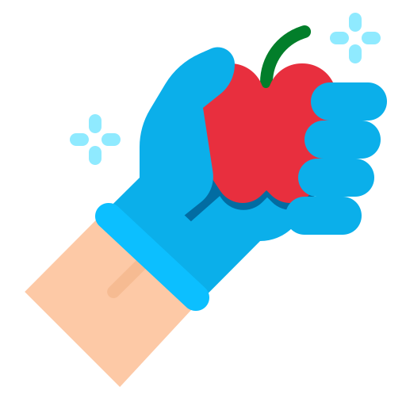

Aqui você encontra informações sobre o covid-19 e sobre os meios de prevenção.
O que é o Coronavírus?
A COVID-19 é uma doença causada pelo coronavírus, que gera infecções respiratórias. O vírus surgiu em dezembro de 2019 em Wuhan, na China, e por ser um vírus altamente contagioso foi decretado pela OMS (Organização Mundial da Saúde) como uma pandemia, isto é, quando uma epidemia se estende a níveis mundiais.
Quais são seus sintomas?
Cerca de 80% dos casos são assintomáticos, ou seja: a vítima está contaminada, porém não apresenta os sintomas. Os que apresentam sintomas fazem parte dos restantes 20% e podem apresentar tosse, febre, coriza, dor de garganta e dificuldade para respirar.
Como ocorre o contágio?
O contágio costuma ocorrer pelo ar ou com contato pessoal com secreções contaminadas, como gotículas de saliva, espirro, tosse ou catarro. Por conta disso os indivíduos podem se infectar com o vírus a partir do contato pessoal próximo com alguém contaminado ou com objetos ou superfícies contaminadas seguido de contato com a boca nariz ou olhos.
Como combater o coronavirus?
Se possível, obedeça às regras de isolamento social recomendadas por autoridades internacionais.

Higienize todos os alimentos e objetos que comprar.

Caso precise sair de casa, utilize máscaras que cobrem o nariz e a boca.

Lave as mãos frequentemente com água e sabão. Quando isso não for possível utilize um álcool gel com no mínimo 70% de álcool etílico.
Evite tocar em seus olhos, nariz e boca.

Quando tossir ou espirrar, cubra o nariz e a boca com o cotovelo dobrado ou um tecido.

Mantenha uma distância segura de pessoas que não estão obedecendo ao isolamento social.
Evite ir desnecessariamente a clínicas ou hospitais, para que assim o sistema de saúde possa operar com mais eficiência.